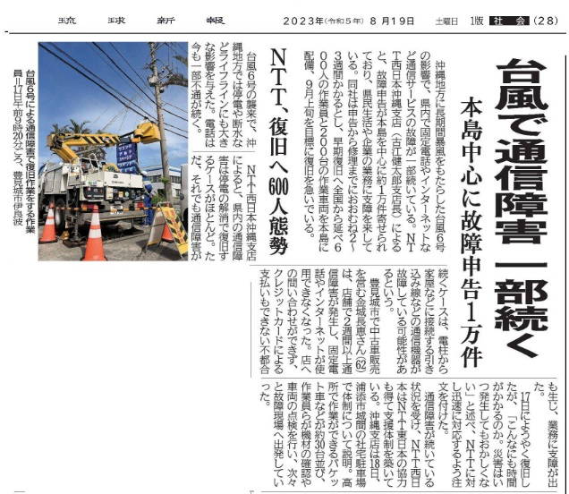

うるがいの話 ある日
最新: プリンター修理不能【うるがいの話 ある日】とは 一日だけのプログです
『うるがいの話』の最新一日だけのプログで、通信料が少なく経済的だ。カニの画像をクリックすると全ての日付が載る『うるがいの話』サイトを表示します
|
|
【うるがいの話】 うるがい(ｳﾙｶﾞｲ urugai)とは、『もずくがに』の名前でとても大きくなります。 |
|---|---|
|
|
【カミマヤーの話】 猫のことを方言でマヤーといいます。カミマヤー（kamimayaa）とは、神の猫のことです。 |
|
【たながぁの音楽】 たながぁ（ﾀﾅｶﾞｰ tanagaa）とは手長えびのことで、何種類かあり大きいのは車 エビぐらいになります。 |

|
【ぶながぁの話】 ぶながぁ(ﾌﾞﾅｶﾞｰ bunagaa)とは、赤い髪の毛、赤い身体、そして身長は１ｍ２０ｃｍ ぐらい、川の蟹を食べているの目撃された。場所は沖縄県国頭郡大宜味村のと ある村僕の隣近所に住んでいる爺さんから、聞いた話です。 |
|
|
【ギーマの話】 ギーマ(giima)とは、山原の里山に咲くスズランに似た、 花を付けます。実は食べられます、 気が付くと口の周りが紫になっています。 |
2023年08月19日 (土）プリンター修理不能
16:52

コドモが就活活動につかうため、家のプリンター（２０１５年発売）の利用し
たところ、エラーコードＢ２０３でた。家電量販店で、修理手続きをしたとこ
ろこの製品は、去年で修理対象の製品でなくなったことが判明。それでは、後
継機種を紹介してと頼んだところ店員が一人しかいない、他のお客様の対応で
お待ちくださいと言われ、暫くまったが・・・、長いので持ち込んだ故障プリ
ンターをまた、家に持って帰った。暫く、なんとかならないかといじっていた
が諦める。さてアマゾンで買うか、どの機種なのかとネットで調べるてみる。
GS6930の後継機が、2016年発売 TS8030インクがMG6930と同じ
TS8030の後継機が、2017年発売 TS8130インクがMG6930と違う
最新はTS8630 2022年モデル29,800円インクがCanon 純正 6,955円
家には、最近６千近くで購入したインクが残っている。インクが利用できる
TS8030の非常に良いという中古品９、８００円を購入した。これって、ネット
環境が利用出来ること。やっとＮＴＴの障害件数が、約１万と新聞に載ってい
た。９月上旬をメドに対応するとあったが、８月も使えない人がいる・・・。
１６時４６分 ビットコインの総資産 ￥１０、９３０（↓９３）